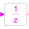

UnitDelayDelay the clocked input signal for one sample period |

|
Information
This information is part of the Modelica Standard Library maintained by the Modelica Association.
This block describes a unit delay:
// Time domain description
y(ti) = previous(u(ti))
// Discrete transfer function
1
y(z) = --- * u(z)
z
that is, the output signal y is the input signal u at the previous clock tick. At the first clock tick, the output y is set to parameter y_start.
Parameters (1)
| y_start |
Value: false Type: Boolean Description: Value of output signal at first clock tick |
|---|
Connectors (2)
| u |
Type: BooleanInput Description: Connector of clocked, Real input signal |
|
|---|---|---|
| y |
Type: BooleanOutput Description: Connector of clocked, Real output signal |
Used in Examples (2)
|
Modelica.Clocked.Examples.Elementary.BooleanSignals Example of an AssignClock block for Boolean signals |
|
|
Modelica.Clocked.Examples.Elementary.BooleanSignals Example of an AssignClockVectorized block for Boolean signals |